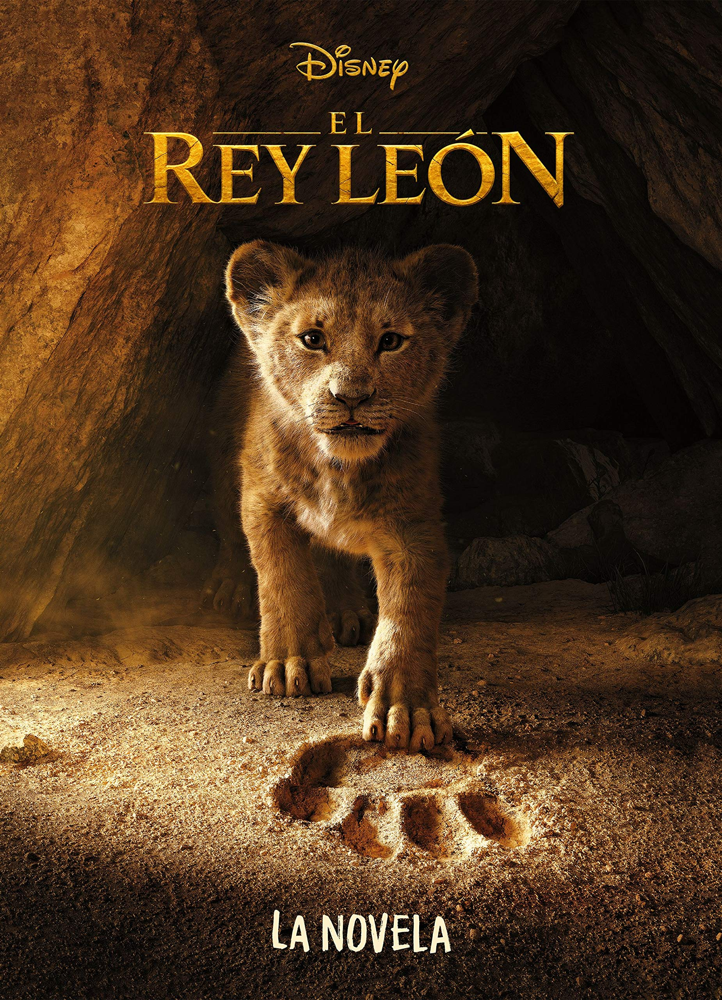
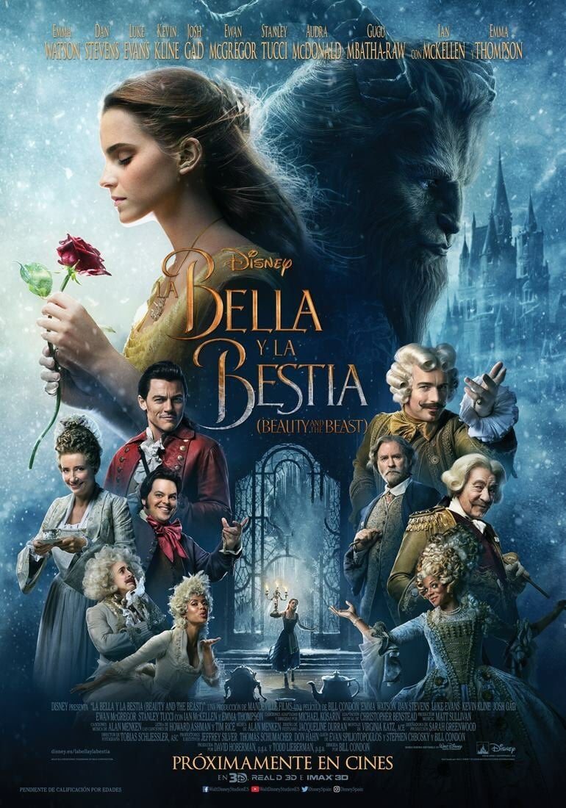
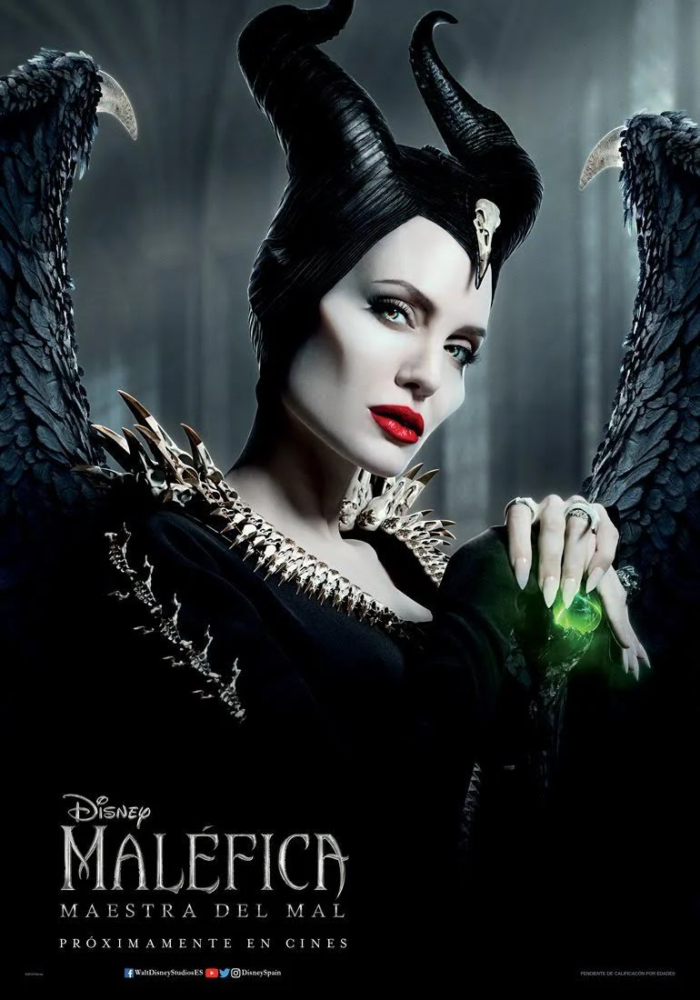

Peliculas mas destacadas del mes:
El rey leon
El rey leon es una pelicula que se desarolló y salió por primera vez en el año 1994, actualmente crearon la versión original, la cual fue un exito en todo el mundo, ya que fue una de las mas taquilleras del momento.
A su vez actualmente fue la película más taquillera del momento, ya que era una de las mas esperadas del año, que la gente la había pedido tiempo atras.
A tenido un total de 200 millones de ventas en todos nuestros cines a nivel mundial y eso es de muy buen agrado.
Toy Story 4

Toy Story 4 junto al resto de la saga, fue de las mejores peliculas de animacion, enfocada a los jovenes.
Esta película, fue un gran estreno, ya que veniamos de varias películas bastante buenas, sobre todo encontramos un gran trabajo en el desarollo de esta última, por lo que incitó y llamó tanto al público para verla en su estreno.
El día de salida de la película encontramos que los cines estaban repletos tanto de jovenes como de personas mayores, o de padres con hijos. Además hubo muy buena critica en la primera tanda de personas, lo que hizo que esto le llegara a nmas personas.
Bella y Bestia
La bella y la bestia fue una película que nació años atras enfocado al publico infantil, por aquel entonces no había un gran desarollo como el que tenemos actualmente, por ellos encontramos este nuevo formato de lapelícula
Tras el anuncio de la salida de la película, mucha gente fue corriendo para comprar su entrada anticipada, ya que era tal excitación, que la gente no podía esperar un instante más sin tener su entrada.
El día de su estreno fue genial, todas las salas llenas y a rebosar, con todas las personas con ganas de que la película empezara, pero deseando por dentro que no llegase a su fin
Malefica
Malefica fue uno de los mayores exitos en cuanto al cine actual, nadie se imaginaba que fuesen a encontrar una película con estas caracteristicas, pero tanto esfuerzo dio su fruto, los creadores comentaron el duro trabajo para su desarollo, y el tiempo y trabajo empleado en la misma
Todos quedaron sorprendidos con los graficos y el buen trabajo de los actores, como todos estaban metidos en la piel del personaje y como disfrutaban de cada escena que pasaba
Todos los espectadores quedaron asombrados ante tal película, de la cual hubo una muy buena critica, y de donde los desrolladores sacaron muy buenas cosas de cara un futuro, para nuevos y grandes proyectos